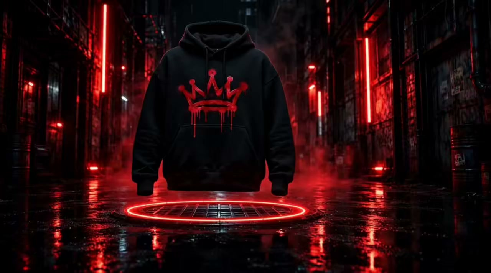
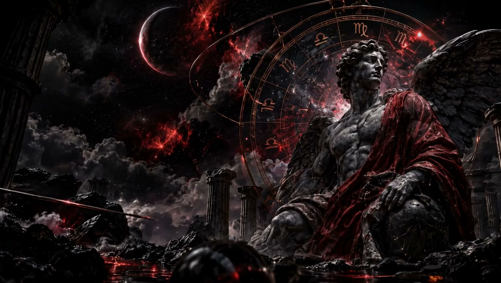

01 / The streetsScroll to unfold


03 / The signatureKeep your
Keep your
crown.
The mark. The mindset.
The piece that brings it together.
Scroll to turn the piece360° / Film study
The essentials.
Your own way.
The crown is a reminder.
Where you come from stays with you.
How you wear it is yours.

04 / Beyond the blockSame roots.
AstrologyDestiny written. Legacy worn.↗Same roots.
Another universe.
From the streets to the stars.
Discover the Astrology collection.
Born HoodWear your roots.
Your story.
Your rules.
You carry your neighborhood with you. The places. The people. The things that made you.
Wherever you go next, bring your world with you.
Explore the collection